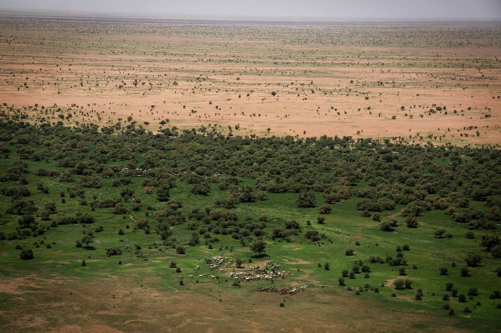
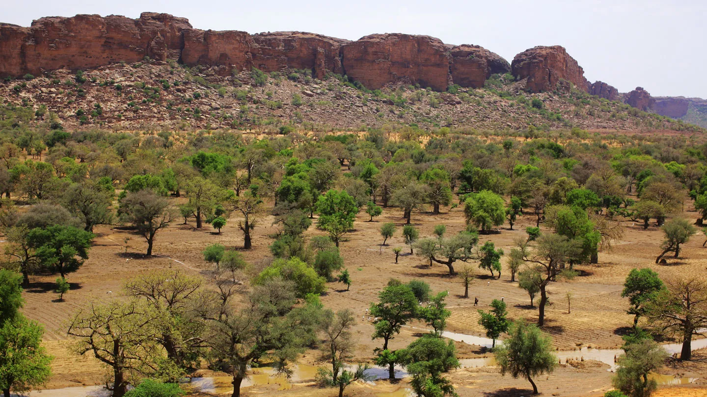
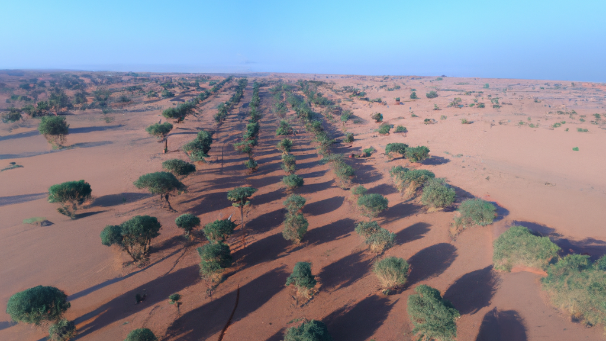
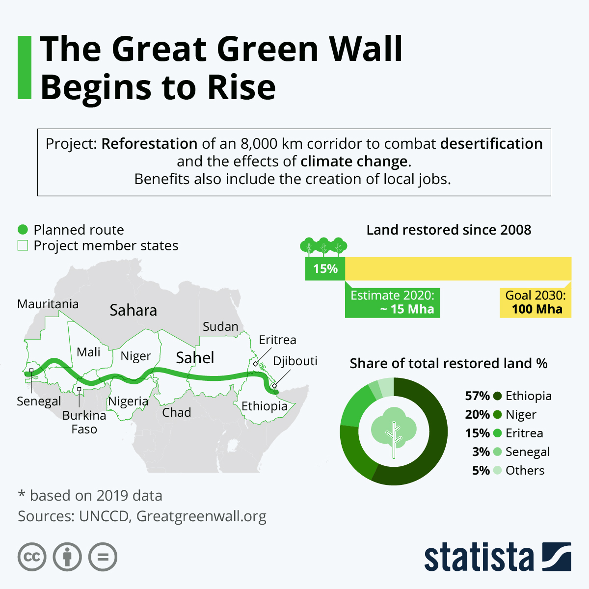
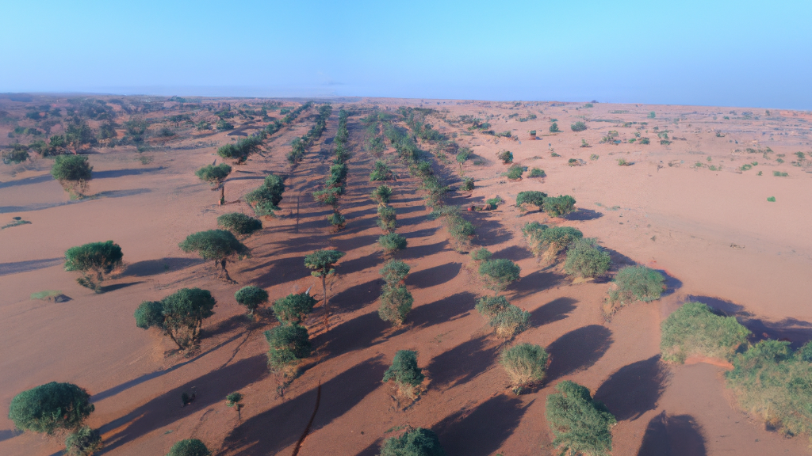
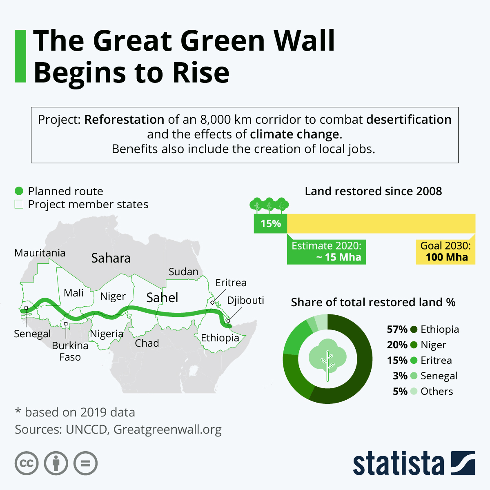
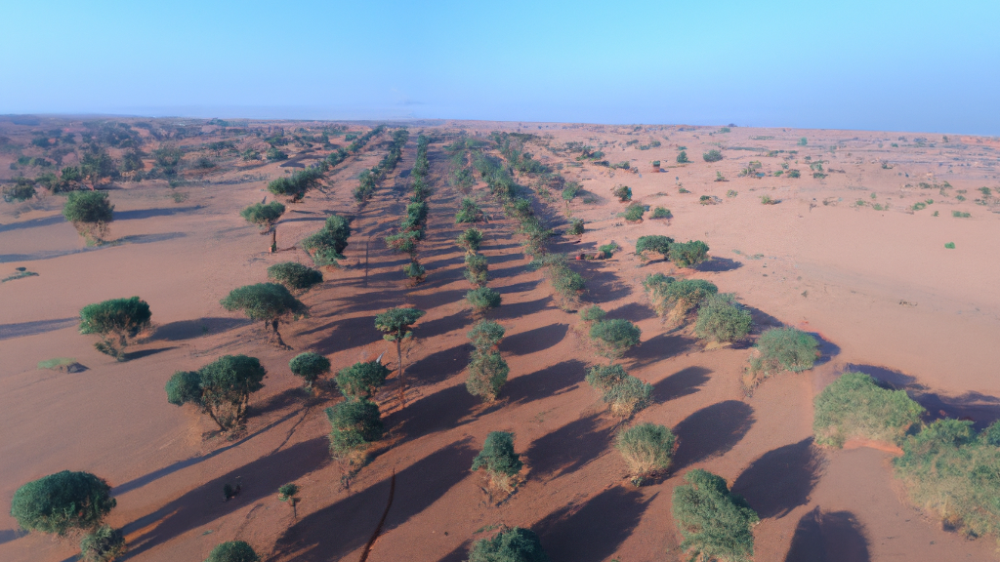
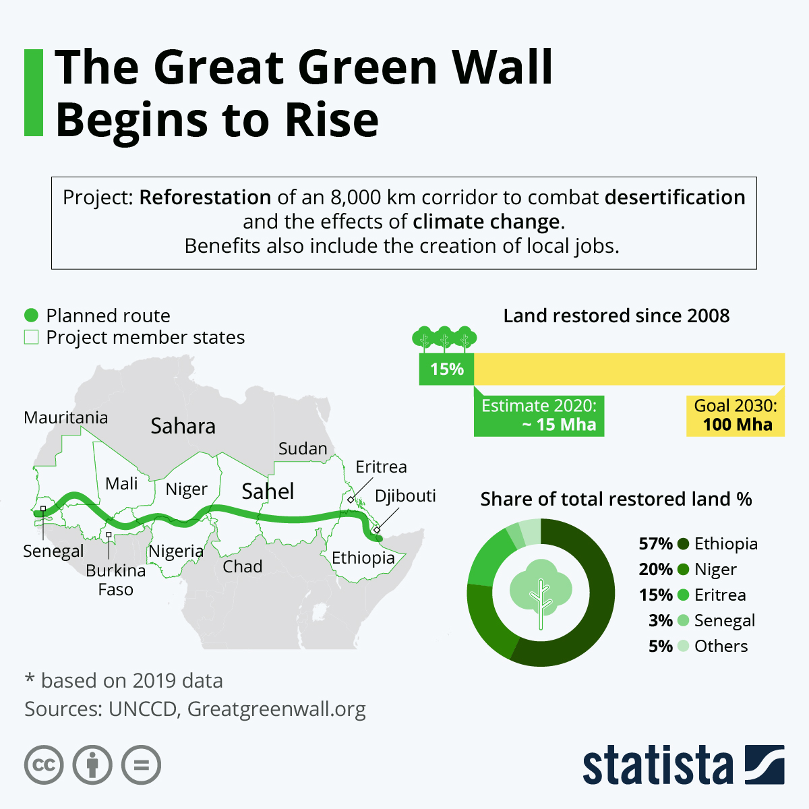

Про сайт
Ласкаво просимо на TreeCare - ресурс для отримання інформації про дерева, їх характеристик, ареалу розповсюдження та іншої інформації.
Наша мета - допомогти вам дізнатися більше про різні види дерев, їх характеристики та способи турботи про них.
Тут ви знайдете описи хвойних, листяних та плодових дерев, а також корисні поради щодо їх вирощування та підтримки здоров'я
Цікаві факти про дерева
- Дерева є найстарішими живими організмами на Землі. Деякі з них можуть жити тисячі років!
- Дерева виробляють кисень, який ми використовуємо для дихання, і поглинають вуглекислий газ, що допомагає боротися зі зміною клімату.
- Одне доросле дерево може поглинати до 48 фунтів вуглекислого газу на рік.
Проект Sahara Green Wall
Sahara Green Wall - це амбітний проект, метою якого є висадження смуги дерев шириною 8000 кілометрів через увесь Африканський континент, щоб зупинити розширення пустелі Сахара.
Цей проект не тільки допоможе відновити ландшафт, але й забезпечить засоби до існування для місцевих громад


 





×